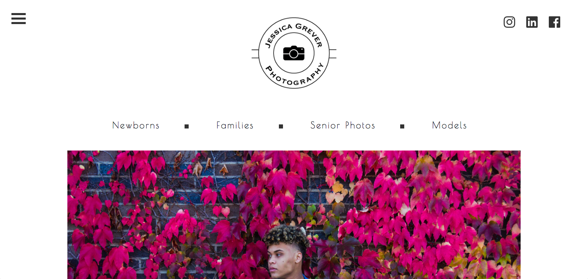
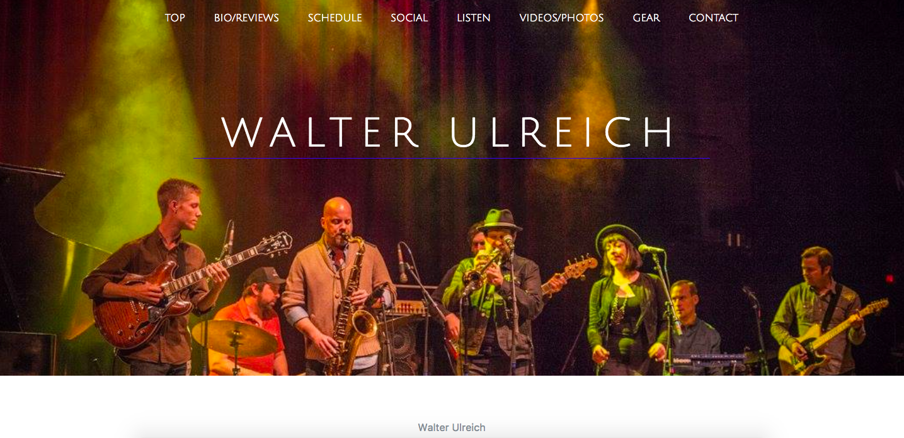
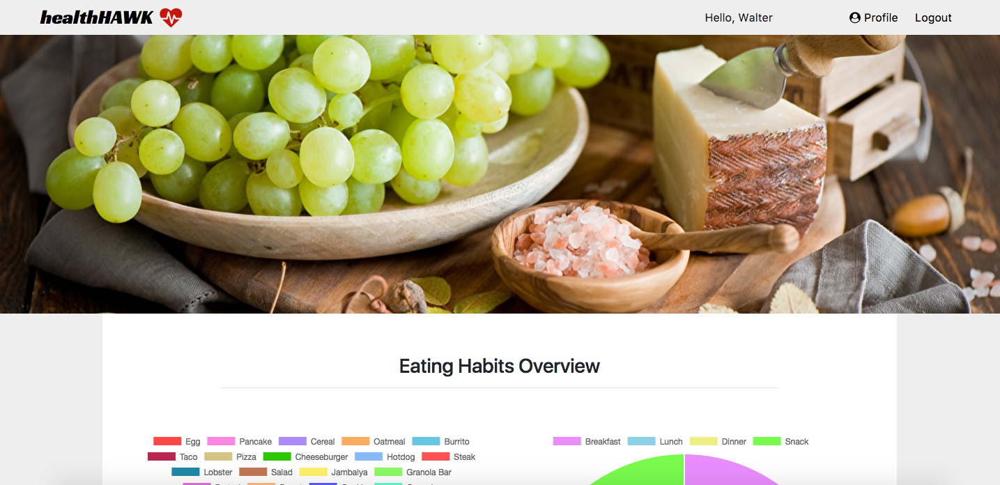

Book Club
A full-stack application that I completed as a student at CodeCraft School of Technology.

A portfolio website that I created for a local photographer.
A portfolio website that I plan on using to promote myself as a musician and music educator.
A website that I designed for a local Mexican Restaurant.
A full-stack application that I completed as a student at CodeCraft School of Technology.
A full-stack application that I completed as a student at CodeCraft School of Technology.
